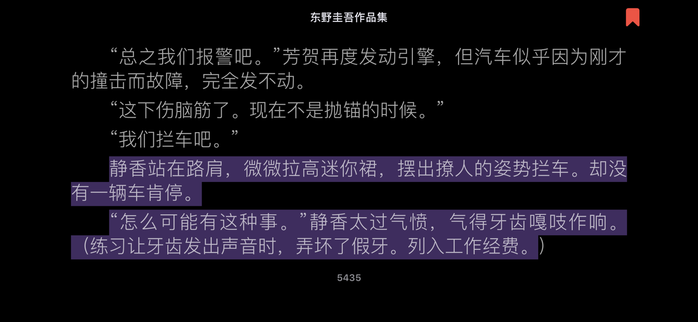
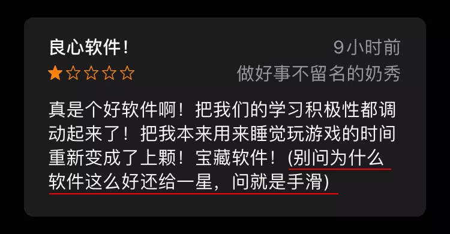

你去玩耍了吗
只有孩子
才更多保留了玩耍
不过成年人也需要玩耍
东野圭吾不少剧情就这么会玩，小说《超.税金对策杀人事件》有这么一小段

注意看图片括弧内的文字 ，那是成人孩童的玩耍！不有拍案的感觉？
相反的是，成年人如果生硬地开发面向孩子的功能，那评论区难免成为孩童玩耍的地方 。

开发需求缺了玩耍，再在强迫之下，真的更多的五星“分期”到来。你（开发人员）不玩耍，他们（孩童）来玩耍。
事物发展的规律让你不得不玩耍，哪怕是在管理领域。
生于1928年的马奇与诺贝尔经济学奖得主赫伯特・西蒙于 1958 年合写了一本《组织》。
组织发展得兼顾长期和整体利益，并且积极探索。玩耍可以发现有趣的东西，探索不合常规的事物，在一致性之外开拓新的发展方向，提高组织的适应能力和生命力。
在《玩耍与理智》一文，马奇提到
为了更好地在行动中发现目标、助长有趣目标的发展,我们还需要找到一种方法暂缓执行理智下达的一致命令。
这里,我认为,我们越来越明白我们需要什么了。我们需要的就是玩耍。
马奇强调在理智之外，需要玩耍，如此可以发现有趣的东西。
玩耍是故意暂时放宽规则,以探索有没有其他规则可选。
不免让我想起了职业经理人概念所起源的宗教
> 主说：我必使孩童作他们的首领，
使婴孩辖管他们。(以赛亚书 3:4 和合本)
哈哈，宗教也有好玩的地方。
你不玩耍嘛？
当然事物是两面的，凡事不能太过分，玩耍也不能。
总有一天,玩耍行为不是被终止掉,就是以某种有意义的方式被纳入智慧结构。规则的放宽是暂时的。玩耍者需要接受这一点。
玩耍是智慧的工具，这个工具，马奇建议这么来用：
- 第一,我们可以把目标当成假设。
- 第二,我们可以把直觉当成真的。
- 第三,我们可以把虚伪当成过渡。
- 第四,我们可以把记忆当成敌人。
- 第五,我们可以把经验当成理论。
以上方法,每个都可以用来让理智型智慧系统暂停运行。这些方法都带有玩耍的性质。
（如何有效玩耍，马奇给了很好的建议，大家有空不妨翻阅。）
欢迎联系 Arvin Yu , 本作品采用 知识共享署名-非商业性使用-禁止演绎 3.0 Unported许可协议 进行许可。
Copyright © 2019 Modified by ArvinYu, Theme used GitHub CSS.